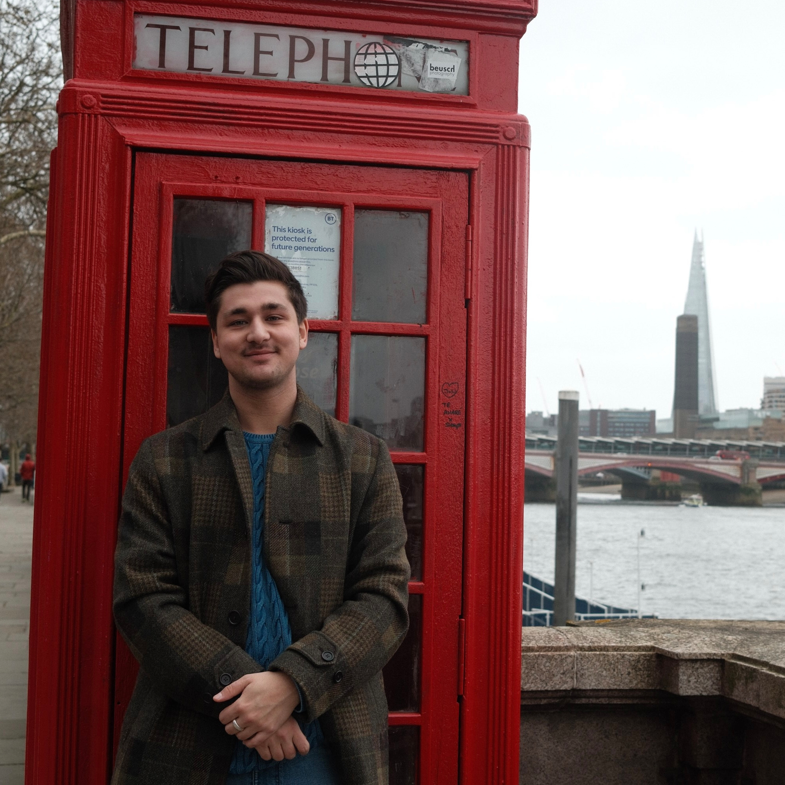
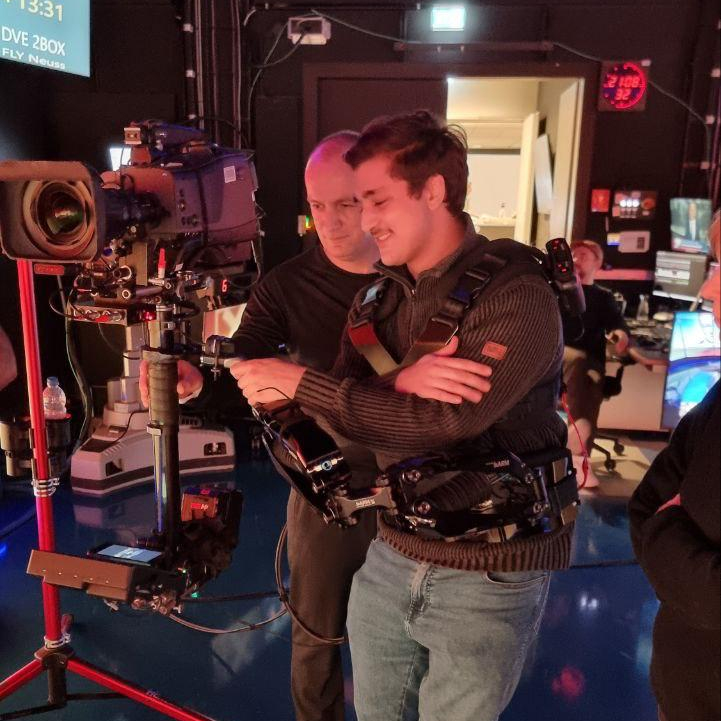

About

Hey There! I'm Maximilian, a 20 year old Computer Science student at the Humboldt University of Berlin. I have a background in broadcast technology, rigging, and technical event production, my experience is listed in- depth a little further down. My interests, Computer science and Broadcast aside, are Photography, reading, and nature walks.
Experience

Experience in broadcast operations, studio support, rigging, and technical event production. Contributed to live productions requiring reliability, precision, and calm problem-solving.
- Rigging for UEFA Womens Euro, Basel (2025)
- Rigging for Rolling Loud, Vienna (2024)
- Rigging for Lollapalooza Berlin (2024/2025)
- WELT Studio Technician, Berlin (2024–ongoing)
CV & References
My CV and a list of references are available upon request.
Photography
Check out my photography portfolio!